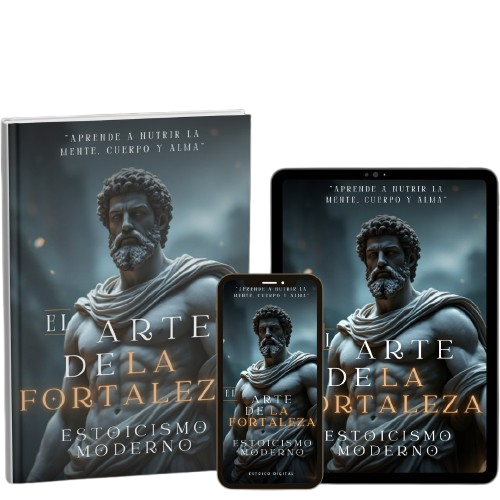
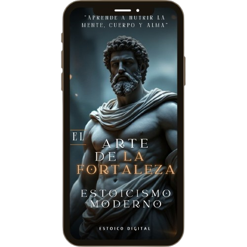

01 : 00 : 00
Estás a un solo click de transformar tu vida con el libro digital "El Arte de la Fortaleza"
EL ARTE DE LA FORTALEZA ESTOICA

En un mundo dominado por el caos y la incertidumbre, la fortaleza estoica emerge como un arte supremo: una disciplina del alma que forja carácter, templanza y dominio interno. Esta obra es más que un libro, es un entrenamiento mental, una forja de acero espiritual donde cada página afila tu voluntad y enciende el fuego de la resiliencia.
Aquí no encontrarás promesas vacías, sino principios eternos practicados por los más sabios: Marco Aurelio, Epicteto y Séneca. Con ellos aprenderás a dominar la adversidad, a mantener la serenidad en medio del caos y a convertir cada obstáculo en un peldaño hacia la grandeza interior.
“El Arte de la Fortaleza Estoica” es una guía para quienes están listos a dejar de ser víctimas de las circunstancias y comenzar a vivir con propósito, razón y coraje. Tu libertad comienza con el dominio de ti mismo.
LIBRO DIGITAL:
El Arte de la Fortaleza Estoica

“El Arte de la Fortaleza Estoica” no es solo un libro, es una declaración de guerra contra la fragilidad interna. Aquí encontrarás la esencia atemporal del estoicismo clásico llevada al terreno feroz del mundo moderno. ¿Cómo mantener la templanza en medio de la tormenta? ¿Cómo avanzar con firmeza cuando todo tiembla?
Esta obra te guía a través del pensamiento de los grandes sabios de la antigüedad, enseñándote a forjar autodisciplina, dominio emocional y fuerza de carácter. No es solo lectura: es entrenamiento mental, un escudo contra la debilidad y una espada contra el caos.
Prepárate para despertar tu poder interno. El camino de la verdadera fortaleza comienza aquí.
CAPÍTULOS

- 🔘 El poder de la razón: vivir conforme a la naturaleza
- 🔘 Lo que depende de ti y lo que no
- 🔘 Las cuatro virtudes cardinales: sabiduría, justicia, templanza y coraje
- 🔘 La dicotomía del control: libertad interior
- 🔘 Cómo afrontar la adversidad con serenidad
- 🔘 La muerte y la fugacidad de la vida
- 🔘 El valor de la autodisciplina
- 🔘 El rol del deber y la acción virtuosa
- 🔘 Relaciones humanas: compasión sin apego
- 🔘 Cómo manejar emociones intensas
- 🔘 Silencio, contemplación y journaling estoico
- 🔘 Estoicismo y liderazgo: gobernarse para gobernar
- 🔘 Trabajo, ambición y propósito con virtud
- 🔘 Tecnología, redes sociales y el alma tranquila
- 🔘 Minimalismo estoico: querer menos, ser más
¡Haz clic en el botón "Quiero mi libro"!
OFERTA ESPECIAL
USD 9.99
ANTES 19.99
PRIVACIDAD: TU INFORMACIÓN ESTÁ 100% SEGURA.
COMPRA SEGURA: AMBIENTE SEGURO Y AUTENTICADO.
ENTREGA POR EMAIL: ACCESO AL PRODUCTO ENTREGADO POR EMAIL.
CONTENIDO APROBADO: 100% REVISADO Y APROBADO.
ESTE PRODUCTO ES COMERCIALIZADO CON EL APOYO DE HOTMART. LA PLATAFORMA NO REALIZA UN CONTROL EDITORIAL PREVIO DE LOS PRODUCTOS VENDIDOS, NI EVALÚA EL TECNICISMO Y LA EXPERIENCIA DE QUIENES LOS ELABORAN. LA EXISTENCIA DE UN PRODUCTO Y SU ADQUISICIÓN, A TRAVÉS DE LA PLATAFORMA, NO PUEDE CONSIDERARSE GARANTÍA DE CALIDAD DE CONTENIDO Y RESULTADO, EN NINGÚN CASO. AL ADQUIRIRLO, EL COMPRADOR DECLARA CONOCER ESTA INFORMACIÓN. PUEDES ACCEDER A LOS TÉRMINOS Y POLÍTICAS DE HOTMART AQUÍ, INCLUSO ANTES DE FINALIZAR LA COMPRA.
NUESTRAS REDES